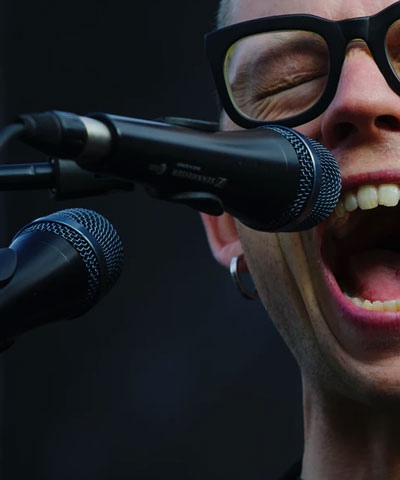
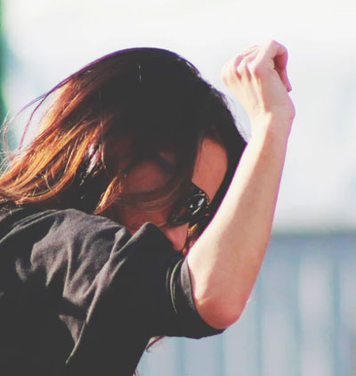
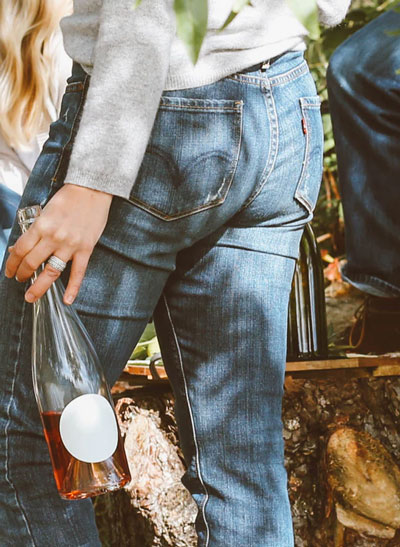

La sobre-conexión a la que nos hemos expuesto, nos ha impedido dejar de mirar la pantalla. Mi computador y celular se apagaron, no podía seguir trabajando. Fue en ese momento de desconexión de mi realidad, como estudiante virtual, que me conecte con mi verdadera realidad.
Tiziano
Noli me tangere
➃
En esta pintura Tiziano representa el Evangelio de San Juan cuando María Magdalena se encuentra con Jesús recusitado en el Jardín de Getsemaní e intenta curar sus heridas, pero Jesús le dice "No me toques" (Noli me tangere), que todavía no he subido al Padre.
Boticelli
La Virgen adorando al niño Jesús
✰
La Obra para su época era muy inusual, porque al Niño Jesus pocas veces se representaba
durmiendo. Las rosas sin espinas y el fondo rocoso forman un jardín cerrado, dando un
símbolo de pureza y protección.
Sanzio
El Sermón de San Juan Bautista
Rafael pintó el Sermón de San Juan Bautista en 1505, que
sería parte de un retablo compuesto por el panel principal, con la Virgen María y el Niño Jesús, flanqueado
por San Nicolás a la derecha y San Juan Bautista a la izquierda.
Paolo Veronese
The Punishment of the Forger
El castigo del forjador, también conocida como El castigo de Vulcano, es una obra del
pintor italiano Paolo Veronese. Es una de cinco escenas retratadas el techo de Sala dei
Tre Capi del Palazzo Ducale en Venecia.
Hans Memling
The Man of Sorrows in the arms of the Virgin
En suma, se encuentra que el
centro del cuadro es la emocion capturada por los dos personajes en escena; y
bajo esta mirada, ese fue el foco del esfuerzo del trabajo.
Lucas Cranach
Judit con la cabeza de Holofernes
Al atacar el general Holofernes al pueblo de Judit, esta decide hacerse pasar por una desertora e ir al campamento enemigo.

Jack
Bust
❼
It's time the tale were told of how you took a child and you made him old.

Wild
Zack
It's time the tale were told of how you took a child and you made him old.
Lost
Rust
It's time the tale were told of how you took a child and you made him old.

Grit
Mud
➩
It's time the tale were told of how you took a child and you made him old.